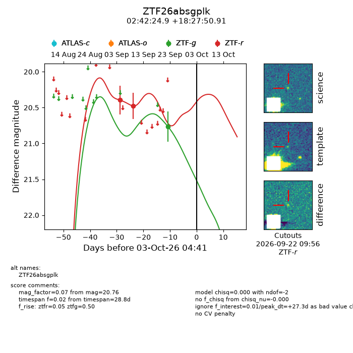
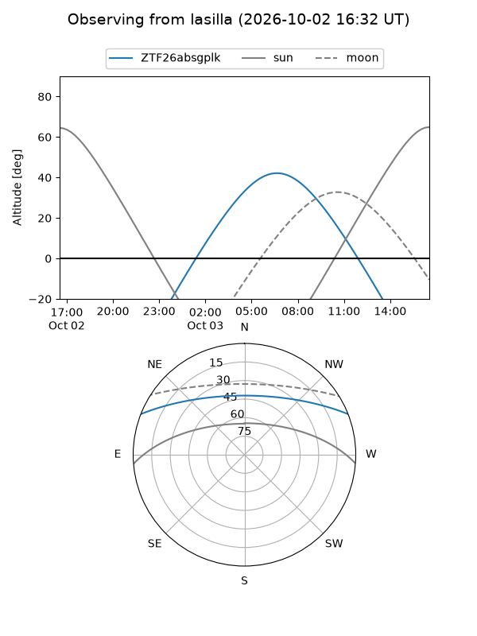
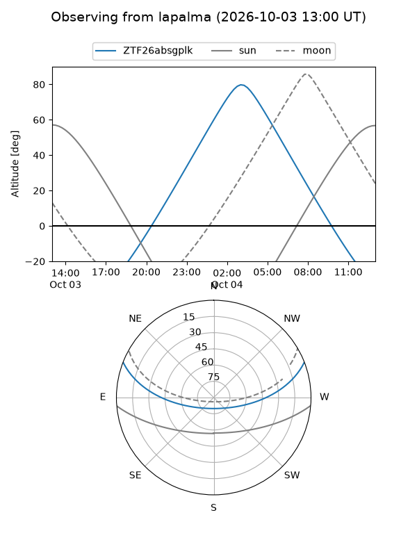
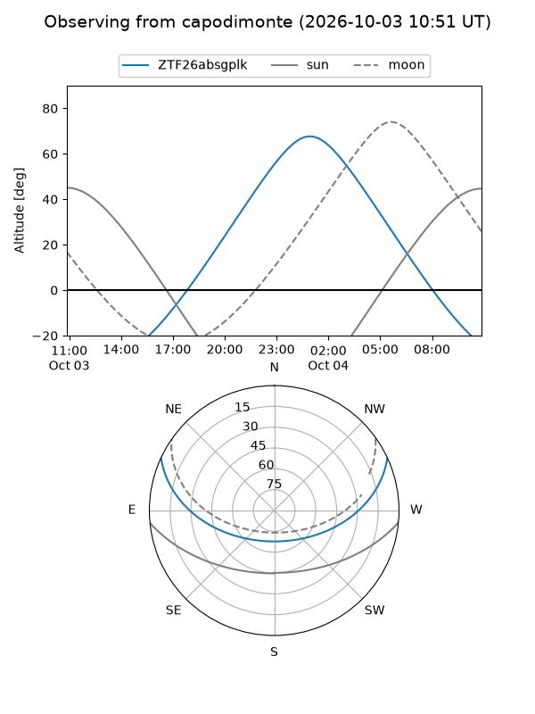
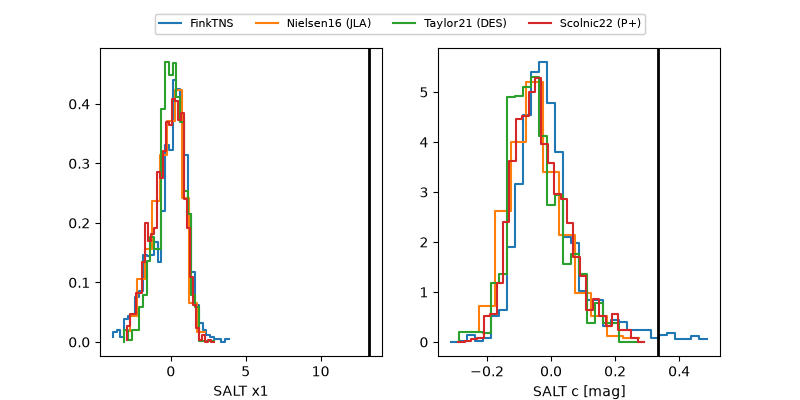

ZTF26absgplk
Target ZTF26absgplk at 2026-10-03 15:48
Aliases and brokers:
FINK-ZTF: ztf.fink-portal.org/ZTF26absgplk
Lasair-ZTF: lasair-ztf.lsst.ac.uk/objects/ZTF26absgplk
ALeRCE-ZTF: alerce.online/object/ZTF26absgplk
Direct TNS query: direct search
alt names
ZTF26absgplk (ztf,fink_ztf)
Coordinates:
equatorial (ra, dec) = 40.6039,+18.46414
equatorial (HMS+DMS) = 02:42:24.94,+18:27:50.91
galactic (l, b) = (156.5300,-37.06394)
Flags:
peak dt: +27.7
Photometry:
last ztfg=20.76, ztfr=20.48
1 ztfg, 2 ztfr detections
Lightcurve

Visibility



Additional plots
